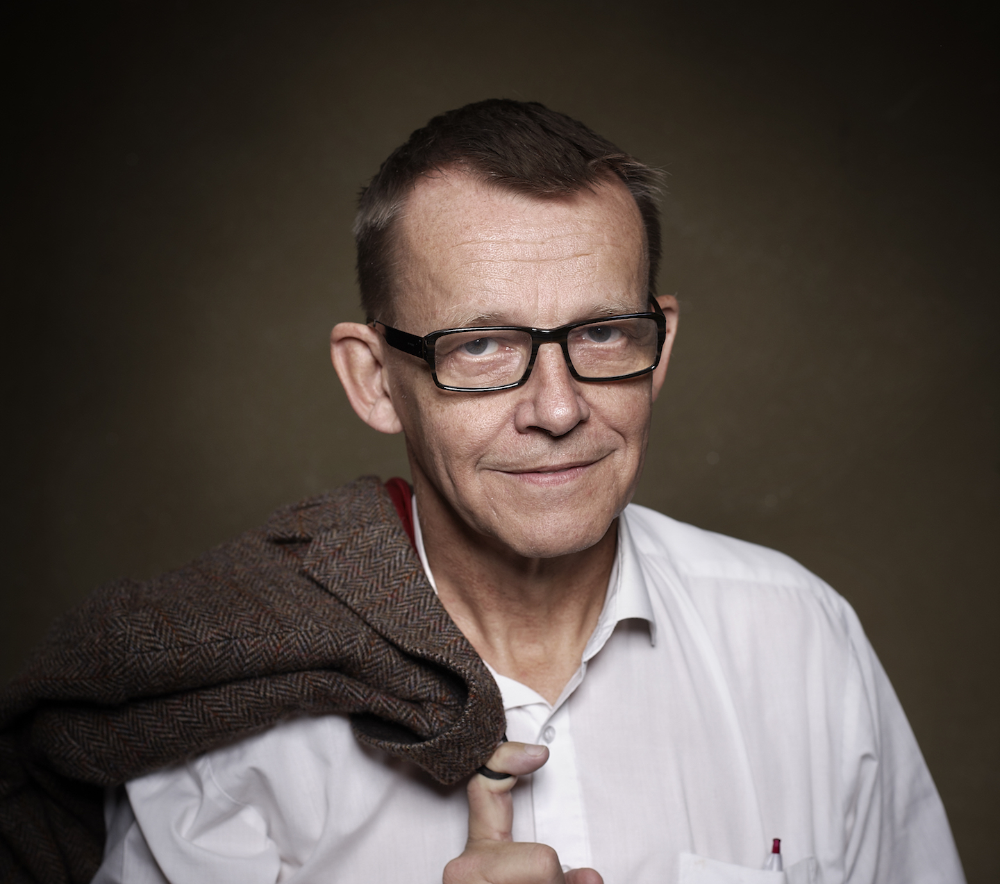

Hans Rosling
"There's no room for facts when our minds are occupied by fear."

Hans Rosling
Some events in Hans Rosling's Life
- 1948- Born in Uppsala, Sweden
- 1967- Studied statistics and medicine at Uppsala University
- 1972- Studied public health as St. John's Medical College, Bangalore, India
- 1976- Became a licensed physician
- 1979-1981- District Medical Officer in Nacala, Mozambique
- 1981- Began investigating on outbreak of konzo, a paralytic disease
- 1986- EarnedHis Ph.D
- 1989- Diagnosed with hepatitis C
- 2009- Listed as one of 100 leading global thinkers by Foreign policy
- 2011- Grieson Awards - Best Science Documentry
- 2017- Diagnosed with Pancreatic Cancer and the died at the age of 68
To learn more about his life you can read more on Wikipedia